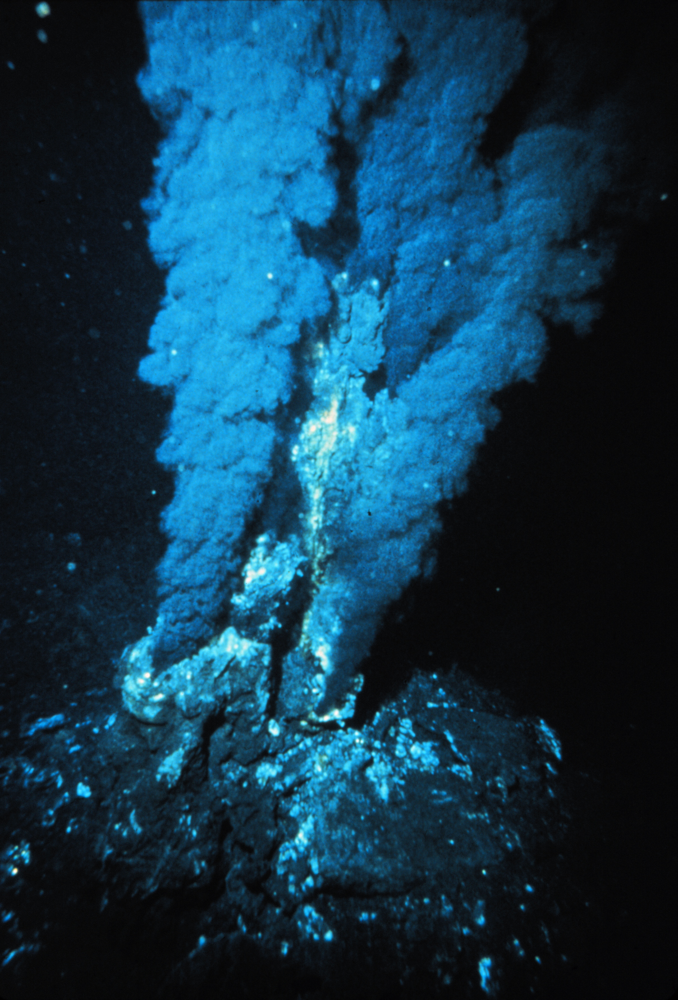
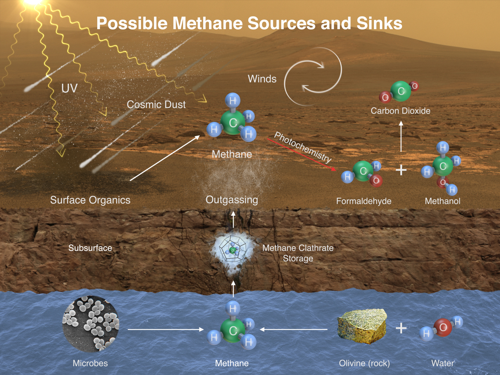
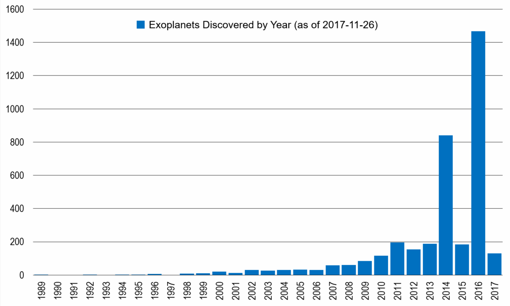
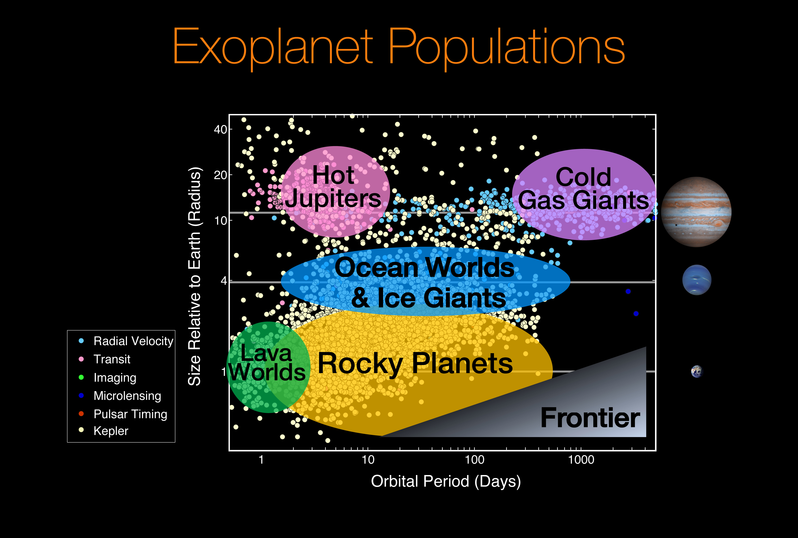

View of Curiosity's robotic arm showing drill in place, with Yellowknife Bay and Mount Sharp in the background.
NASA / JPL-Caltech / Olivier de Goursac, Public domain, via Wikimedia Commons.

Black smoker at a mid-ocean ridge hydrothermal vent
P. Rona / OAR/National Undersea Research Program (NURP); NOAA, Public domain, via Wikimedia Commons.

This image illustrates possible ways methane might be added to Mars' atmosphere (sources) and removed from the atmosphere (sinks). NASA's Curiosity Mars rover has detected fluctuations in methane concentration in the atmosphere, implying both types of activity occur on modern Mars.
The idea that life could exist elsewhere outside of Earth, be it in our own Solar System or another, has captured the imaginations of people and scientists alike, for as long as we have been around. The technology we have at present makes the search for life an ever-more sophisticated, if not humbling one.
On the page of each planet, we discuss the possibility of life existing there - either on the planet itself or one or more of its moons. We also consider whether or not the place would be suitable for humans to establish life there one day in the future, if and when we decide (or are forced) to leave our home planet.
In the video below, James Green (NASA's chief scientist) discusses some of the most promising places besides Earth for life in the Solar System - Mars (a planet), Enceladus (a moon of Saturn), Europa (a moon of Jupiter) and Titan (another moon of Saturn).
We also discuss each of these places on this website. (Quicklinks)
In the video below, writer Stephen Petranek discusses how humans could live on Mars in the future. He thinks that we need to look towards establishing life on the red planet for two main reasons - the threat of extinction and the fact that the desire for exploration is within our DNA.
To read more about the search for life, visit the SETI (search for extra-terrestrial intelligence) Institute website here, and/or NASA's astrobiology page here.
EXOPLANETS
While it's fascinating to consider the possibility of life existing outside of Earth, elsewhere within our own Solar System, as we know the Universe is MUCH (understatement) larger than our Solar System alone.
Scientists are searching for planets around other stars and star systems that could potentially harbour life. Just as the Earth is in the "Goldilock's zone" - it is the perfect distance from the Sun for liquid water to exist on its surface - so too can other planets be just the right distance from their star for liquid water to exist on their surfaces.
This is the key to the quest for life outside of Earth, because every living thing on Earth we know of requires liquid water to survive.
Planets oribitting around these other stars are what scientists call "exoplanets". The first exoplanet was discovered in 1992.
As of 1 August 2022, there are 5,125 confirmed exoplanets in 3,794 planetary systems, with 829 systems having more than one planet.
Certainly, not every exoplanet will be suitable for life. Some are too close to their stars, others too distant, others having atmospheres composed of highly toxic, unbreathable gases. But as we find more and more of these exoplanets, many are within the Goldilock's zone and, along with other factors, seem good candidates for life to potentially exist on them as we speak.
"Life" here doesn't necessarily mean humans or "aliens" - it could be microbes, bacteria, single-celled organisms. But the discovery of any of these outside of Earth would undoubtedly be one of the most remarkable in all of human history thus far.
The closest exoplanet to home is called Proxima B. It is located 4.2 light-years from Earth, which is a very long way away, but actually quite close on an interstellar scale. In fact, it orbits around the star Proxima Centauri, which is the closest star to the Sun.
Interestingly, it is quite similar to Earth in many respects. It is 1.3 times as massive and has a radius 1.1 times that of Earth's. It also has a similar density and we believe it is a "rocky" world
Where it differs considerbaly is in how closely it orbits its parent star. Earth, by definition, orbits the Sun at an (average) distance of 1 AU (1 Astronomical Unit), Proxima b on the other hand, orbits Proxima Centauri at a distance of just 0.05 AU!
By comparison, Mercury (the closest planet to the Sun) orbits at a distance of 0.4 AU.
So does this proximity make Proxima b an inhabitable world? Surely conditions on the planet at such a close distance to its star would be too hot for life of any type to exist? Not so!
In fact, Proxima b is indeed found within the Goldilock's zone of its star. This is because Proxima Centauri is much fainter than our Sun - it is 500 times less bright.
With the appropriate atmosphere, temperatures on the side facing Proxima Centauri (Proxima b is "tidally locked" to Proxima Centauri - meaning one side of the planet always faces towards the star, and the other side always faces away from it. Similarly, the Moon is tidally locked to the Earth.) could reach a comfortable +30 deg C.
Below is an artist's impression of Proxima b, shown hypothetically as an arid (dry) "rocky super-Earth"
Artist's impression of the exoplanet Proxima Centauri b shown as of a arid (but not completely water-free) rocky Super-Earth. This appearance is one of several possible outcomes of current theories regarding the development of this exoplanet, while the actual look and structure of the planet is known in no ways at this time. Proxima Centauri b is the closest exoplanet to the Sun and also the closest potentially habitable exoplanet as well. It orbits Proxima Centauri, a red dwarf with a surface temperature of 3040 K (thus hotter than light bulbs and therefore whiter, as depicted here). The Alpha Centauri binary system is shown in the background. ESO/M. Kornmesser, CC BY 4.0, via Wikimedia Commons.
As mentioned, the search for exoplanets is becoming more sophisticated as time goes on. The chart below shows the number of exoplanets discovered by year, between 1989 and 2017.

Histogram Chart of Discovered Exoplanets as of 2017-11-26. Jonahl613, CC BY-SA 4.0, via Wikimedia Commons.
How do we find exoplanets? (Link, for the interested reader.)
I'll finish by saying, there's quite a variety in these "distant worlds" - all fascinating in their own right. See image below.

Exoplanet Populations. NASA/Ames Research Center/Natalie Batalha/Wendy Stenzel, Public domain, via Wikimedia Commons.